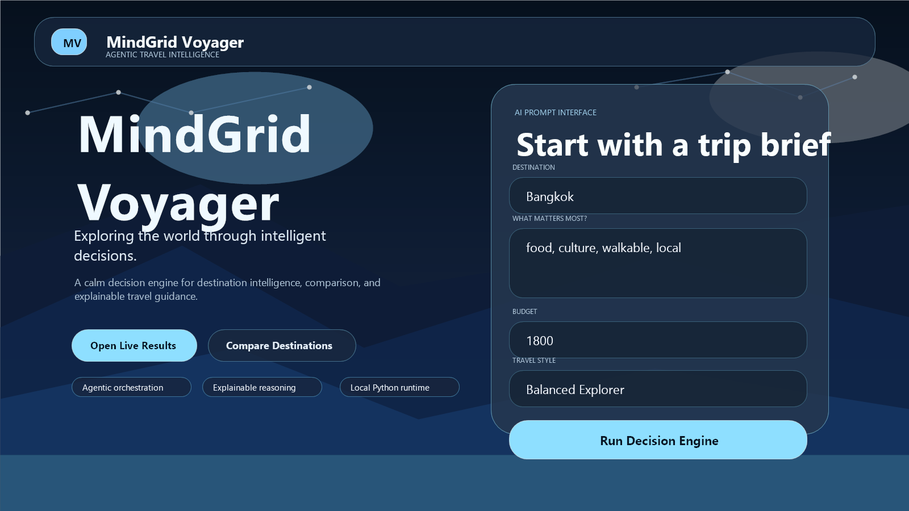
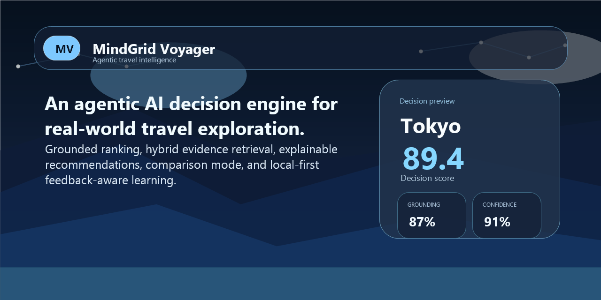
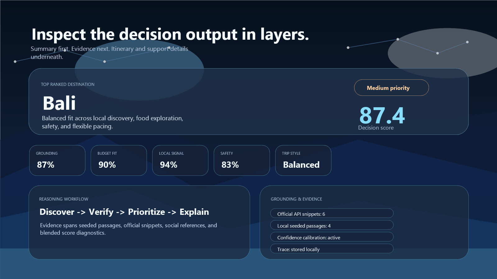
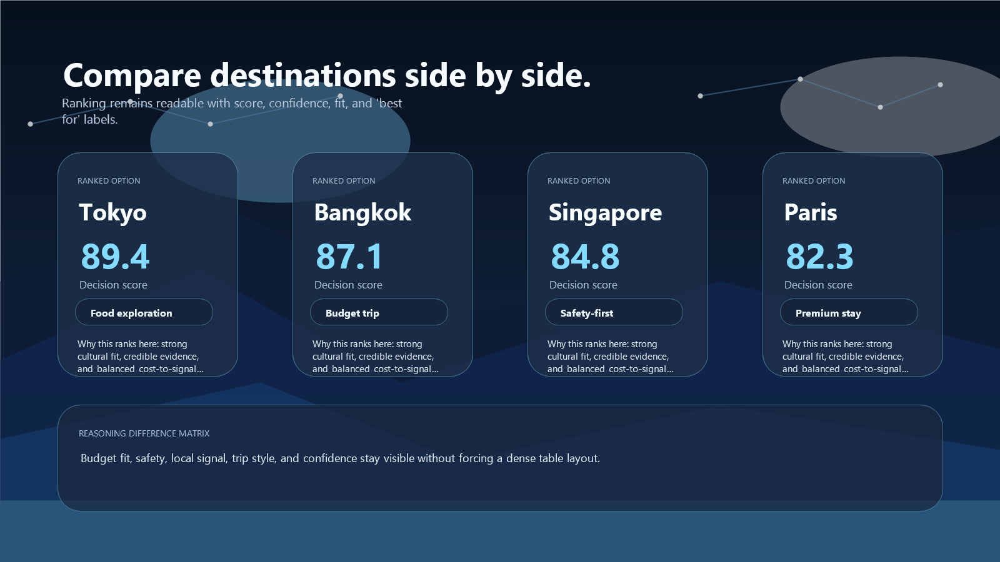
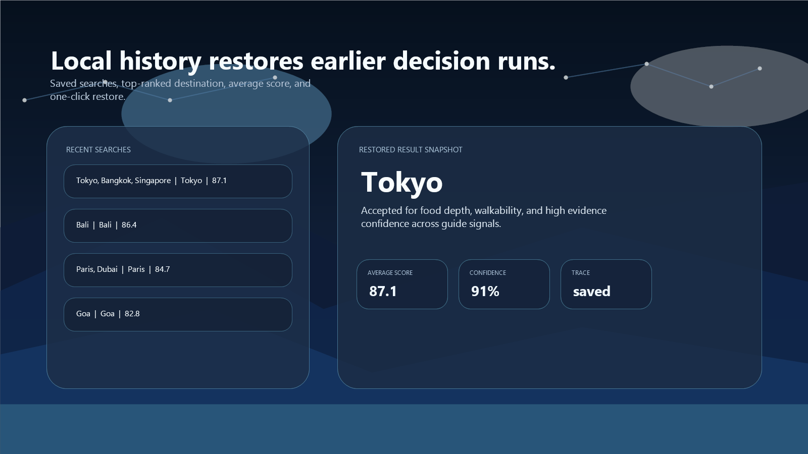
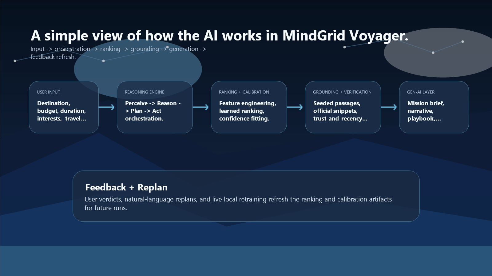

Hero Overview

High-level landing experience with the decision prompt interface and product framing.
An agentic AI decision engine for real-world travel exploration, built to show grounded ranking, explainable reasoning, hybrid evidence retrieval, and premium product execution in one portfolio project.

MindGrid Voyager combines a Python backend, feature-based ranking, calibration, hybrid grounding, explainable recommendations, comparison mode, and a polished local-first interface. It is designed to read as an applied AI systems project rather than a basic travel planner demo.
python app.py and keeps safe fallback behavior without paid APIs
These images ship with the repository so the README and GitHub page have a complete visual story even before a separate hosted demo is added.

High-level landing experience with the decision prompt interface and product framing.

Layered decision output with ranking summary, metrics, reasoning flow, and evidence.

Side-by-side ranked options with readable scoring, best-for labels, and reasoning summaries.

Local-first history that stores decision runs and lets users restore earlier result sets.
The project ships with an architecture diagram and model documentation so reviewers can understand the AI pipeline quickly: user input, orchestration, ranking, grounding, generation, and feedback refresh.

Use this page as the GitHub Pages-ready preview if you later enable repository Pages in settings.